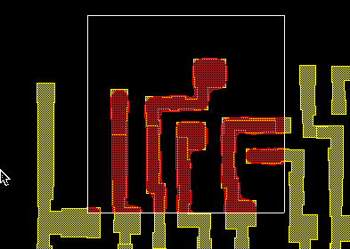

The Print Image
(PI) tool simulates geometries on OPC layers that lie fully or partially
within a selected area.
Figure 1. PI Tool Output

Prerequisites
Configured
the run for your session as described in “Using Sessions”.
Layout
file loaded in the Calibre WORKbench main window.
Procedure
(Optional) In the Calibre
WORKbench toolbar click Select and
draw a bounding box around an area. If you do not select an area,
the entire visible part of the layout is used as the selection area.
In the RET Flow Tool, click Options under the PI button.
Set the starting number
for the layers to be output.
If the output layers
already exist: Replace, Append, Ask First
Set how layers are output
during subsequent runs of the tool.
Click PI once you have finished making
your selections.
The PrintImage tool runs, and
produces output similar to that shown in Figure 1. It creates a new layer in your design
corresponding to the Output Start Layer field value.